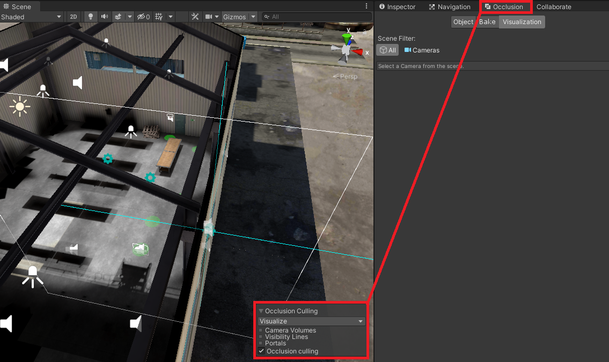
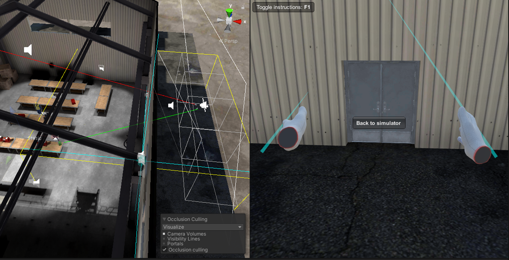
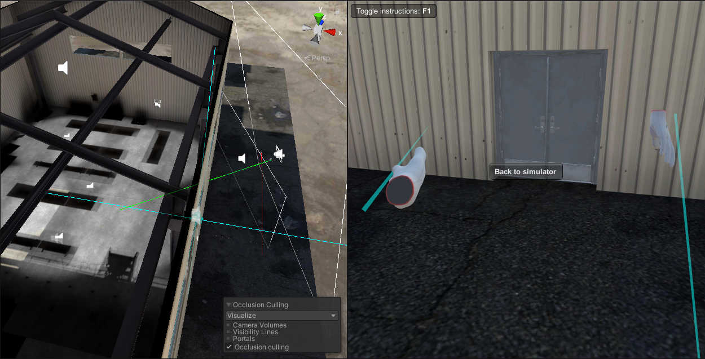

Особенности работы с OcclusionCulling (Artist)
Официальная документация использования OcclusionCulling в Unity
После настройки и запекания OcclusionCulling в своем проекте, необходимо произвести проверку для обнаружения проблемных мест, где инструмент отработал не так как мы ожидали.
Производим проверку
Для проведения проверки необходимо включить и перейти на вкладку окна Occlusion если его нет то добавить посредством нажатия Widows->Rendering->Occlusion Culling
После появления и становления активным вкладки окна Occlusion в окне сцены в правом нижнем углу появится вкладка OcclusionCulling необходимо поставить галочку в чек бокс с одноименным названием 
Теперь мы видим в сцене те объекты которые будут рендерится учитывая работу OcclusionCulling. Необходимо "пройтись" по сцене с камерой и выявить отклонения в работе OC Они могут быть спровоцированны:
- если камера находится внутри объекта (у нас в частности в сцене Hangar, ангар это один большой объект)
- при наличии объектов с дырками в меше
- при наличии множества объектов объединенных в один меш
Тут изображен пример неправильной работы OC:

Что бы пофиксить подобный баг можно прибегнуть к такому способу(костылю):
Устанавливаем блоки на те места где подразумеваются стены, устанавливаем им статичный настройки Occlude Static, Occludee Static, запекаем OC а после запекания удаляем/выключаем.
После подобных манипуляций работа OC станет ожидаемой

Необходимо поставить стены так что бы учитвыать двери и окна подобных стен
Примечание:
Оccluder-объект, который может скрыть другой объект от поля зрения (в зависимости от положения камеры).
Occludee-объект, который может быть скрыт от просмотра (потому что он закрыт другим объектом), но который сам по себе не может скрыть другой объект от просмотра.